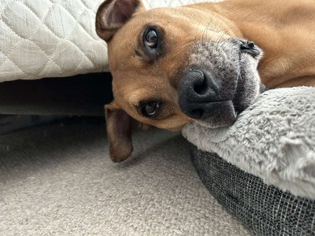

Welcome to My Website
Hi, I’m a computer science student who likes building things, taking them apart, and learning how they work. I mainly code in C++ and Typescript. Outside of class, I’m into reverse engineering and I’m very active with boxing.
This site has three pages: this homepage, a resume, and a topic page that dives into a few of my interests.
Boxing
- Boxing helps me stay consistent, manage stress, and keep a routine.
- I've realized I need a routine to keep my mental health up which is either with boxing or the gym.
Furry Friend
This one here is Zainie, he is my dog and there are so many funny stories he's given me!

Fun Hobby!
Here is one of my favorite hobbies: rock climbing!